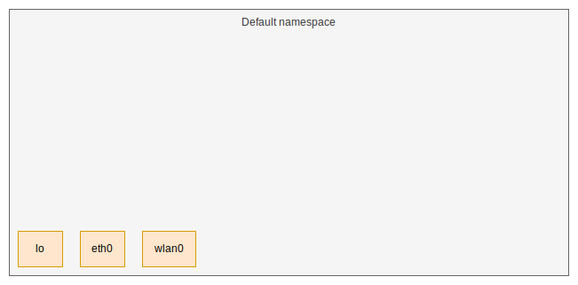
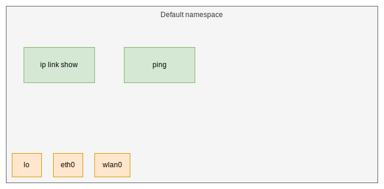
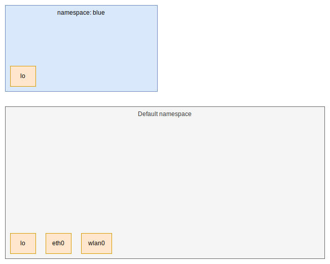
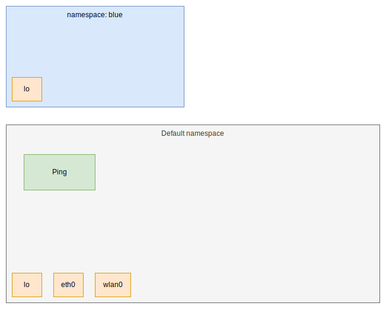
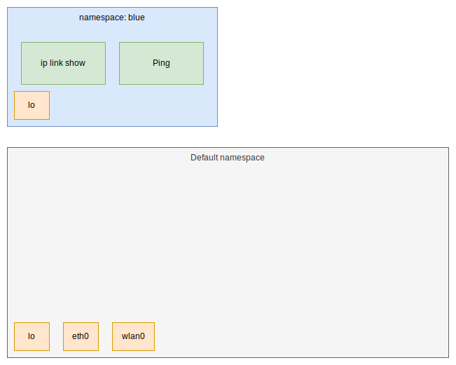
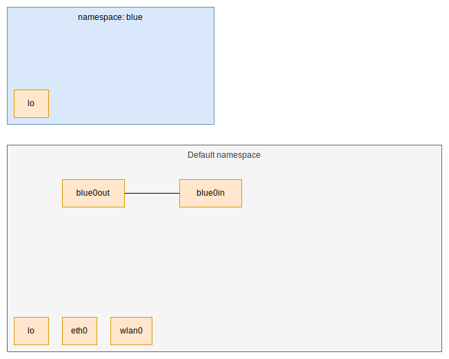
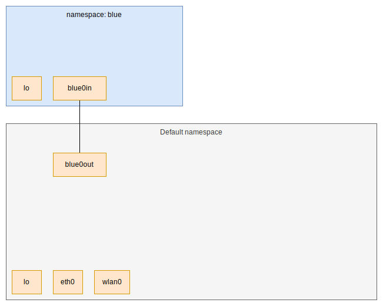
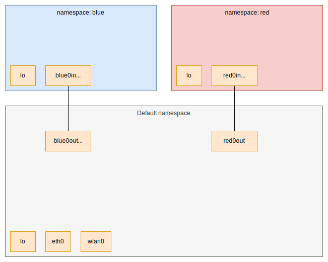
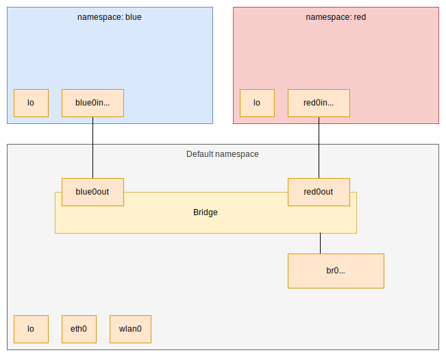
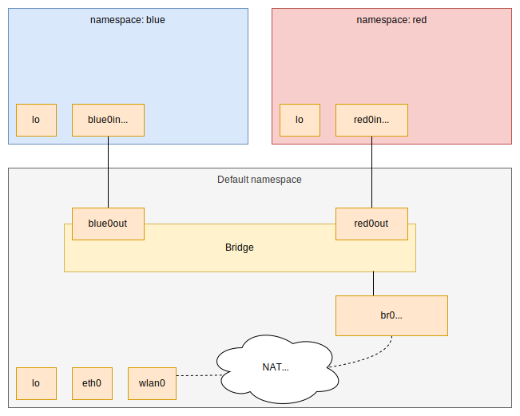

Network Namespaces
What Docker Does Behind The scenes
Who am I?
|
a metal fan |
a programmer |
a gamer 
|
What are containers?
Definitely not virtual machines.
What are containers?
A combination of three things.
- Chroot
- Control Groups
- Network Namespaces
Default network namespace
Default network namespace
Just executing a process puts it in here.
> ip link show
> ping 8.8.8.8

Creating a new namespace
> ip netns add blue

Processes still go to default namespace
> ping 8.8.8.8

start a process in the new namespace
> ip netns exec blue ip link show
> ip netns exec blue ping 8.8.8.8

Veth Pairs
Two virtual NICs connected by a virtual cable.
> ip link add blue0out type veth peer blue0in

Veth Pairs
Using them to connect namespaces
> ip link set blue0in netns blue

Veth Pairs
Assign them IPs like any other interface
> ip netns exec blue ip addr add 10.0.0.10/24 dev blue0in
> ip addr add 10.0.0.1/24 dev blue0out
Bridging
Let's...
- make a new namespace called red
- connect red and blue using a bridge
> ip netns add red
> ip link add red0out type veth peer red0in
> ip link set red0in netns red
> ip netns exec red ip addr add 10.0.0.10/24 dev red0in

> brctl addbr br0
> brctl addif br0 blue0out
> brctl addif br0 red0out
Getting our default namespace IP back
> ip addr del 10.0.0.1/24 dev blue0out
> ip addr add 10.0.0.1/24 dev br0

Nat
- Translates IP addresses
- Allows us to route to other networks
... such as the internet.
We use IPTables to do the NAT
> iptables -t nat -A POSTROUTING -s 10.0.0.0/24 -j MASQUERADE

Now we need to tell the namespaces how to route to the internet.
> ip netns exec blue ip route add default via 10.0.0.1
> ip netns exec red ip route add default via 10.0.0.1